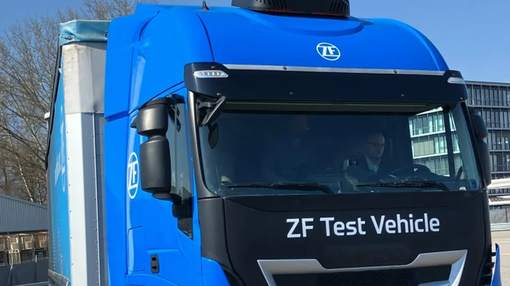

ZF informó el 15 de septiembre de 2026 que TraXon Hybrid recibió el Truck Innovation Award 2027. La organización del premio sitúa la entrega en la gala del 14 de septiembre en Hannover. El reconocimiento corresponde a una tecnología de transmisión para vehículos pesados.
El jurado valoró la integración de hibridación en una plataforma de transmisión y su potencial de aplicación práctica. El anuncio no equivale a la presentación de un camión completo ni confirma una versión comercial para Argentina.
Una tecnología con antecedentes de prueba
Como antecedente, ZF había difundido en abril una jornada de pruebas de TraXon 2 Hybrid con medios europeos. Allí describía una solución que permite conducción eléctrica y conserva operación con motor de combustión. Ese material ayuda a entender el desarrollo, pero no debe confundirse con una prueba realizada esta semana.
Los porcentajes de reducción publicados por ZF se apoyan en escenarios de simulación y condiciones determinadas. No constituyen un ahorro garantizado para cualquier vehículo, especialmente si cambia la tarea o no se cumplen las condiciones de recarga consideradas.
El componente y el camión no son la misma oferta
Análisis de Zabala Repuestos. Un proveedor puede desarrollar una tecnología que después requiere integración en un vehículo. Para un transportista, la pregunta útil es qué conjunto concreto estará disponible y con qué respaldo. Conocer el componente es importante, pero no completa la evaluación.
La propuesta debería identificar configuración, equipamiento y condiciones de uso. También interesa quién será responsable de la atención y cómo se coordinarán las consultas entre proveedores. Una cadena de responsabilidades clara ayuda a que una novedad técnica pueda transformarse en una operación sostenible.

Evaluar la jornada y no solamente una cifra
Para estudiar una alternativa híbrida, conviene describir cómo se utiliza el vehículo durante un día completo. Recorridos, paradas y posibilidades de abastecimiento deben estar presentes en la consulta. La empresa necesita saber qué condiciones permiten aprovechar la configuración ofrecida.
También es razonable pedir una comparación con una referencia conocida. Si cambian la carga o el servicio, debe quedar anotado. Esa transparencia permite discutir el resultado sin atribuir a la tecnología diferencias que podrían provenir de otra organización del trabajo.
Qué debería incluir una demostración
La prueba puede reunir registros de actividad y observaciones del conductor. Antes de empezar, conviene acordar qué se evaluará y cómo se reconocerá una incidencia. Así, el ensayo deja información que puede utilizarse después y no solo una experiencia de presentación.
Las condiciones excepcionales también merecen espacio. La flota debería preguntar cómo se responde cuando una parte del plan no puede cumplirse. La flexibilidad anunciada necesita traducirse en procedimientos concretos para la versión que se propone utilizar.
Una nueva configuración requiere preparación técnica
El taller debe trabajar con documentación y formación correspondientes al sistema instalado. La familiaridad con una transmisión convencional no habilita por sí sola a intervenir en otra arquitectura. Las tareas deben asignarse de acuerdo con los procedimientos oficiales y las competencias requeridas.
Conservar identificaciones e historial facilita las consultas. Una fotografía puede complementar la referencia del equipo, pero no sustituye la verificación de compatibilidad. En una flota con distintas versiones, ese orden reduce la dependencia de la memoria de una única persona.
El significado del premio para el lector argentino
La noticia muestra que la innovación también ocurre en componentes que no siempre se ven desde afuera. Su valor local dependerá de qué productos integren la tecnología y de la atención que puedan recibir. El premio permite seguir una evolución; la incorporación requiere una propuesta específica.
Conviene mantener separadas la distinción recibida, las pruebas anteriores y la disponibilidad comercial. Esa lectura permite interesarse por una solución nueva sin convertir resultados condicionados en promesas universales para el transporte argentino.